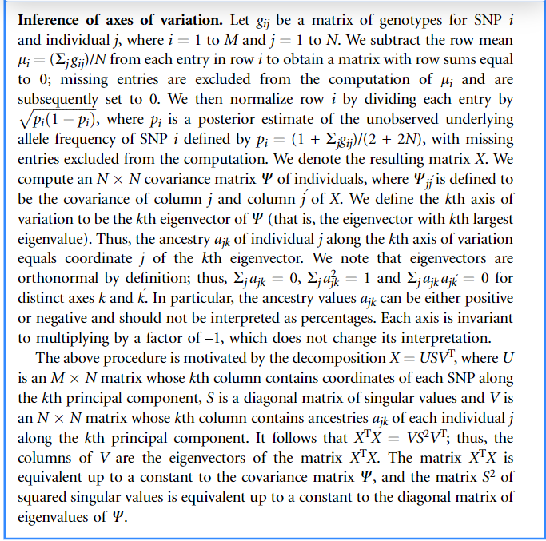

<!DOCTYPE html>


<html lang="zh-CN">


<head>
  <meta name="baidu-site-verification" content="codeva-NSg7ynviLa" />
  <meta charset="utf-8" />
    
  <meta name="viewport" content="width=device-width, initial-scale=1, maximum-scale=1" />
  <title>
    为什么GCTA做PCA分析是对G阵进行特征值分解 |  
  </title>
  <meta name="generator" content="hexo-theme-ayer">
  
  <link rel="shortcut icon" href="/images/mojie.jpg" />
  
  
<link rel="stylesheet" href="/dist/main.css">

  <link rel="stylesheet" href="https://cdn.jsdelivr.net/gh/Shen-Yu/cdn/css/remixicon.min.css">
  
<link rel="stylesheet" href="/css/custom.css">

  
  <script src="https://cdn.jsdelivr.net/npm/pace-js@1.0.2/pace.min.js"></script>
  
  

  

<link rel="alternate" href="/atom.xml" title="null" type="application/atom+xml">
</head>

</html>

<body>
  <div id="app">
    
      
    <main class="content on">
      <section class="outer">
  <article
  id="post-为什么GCTA做PCA分析是对G阵进行特征值分解"
  class="article article-type-post"
  itemscope
  itemprop="blogPost"
  data-scroll-reveal
>
  <div class="article-inner">
    
    <header class="article-header">
       
<h1 class="article-title sea-center" style="border-left:0" itemprop="name">
  为什么GCTA做PCA分析是对G阵进行特征值分解
</h1>
 

    </header>
     
    <div class="article-meta">
      <a href="/posts/1e12f93e/" class="article-date">
  <time datetime="2021-12-11T09:50:45.000Z" itemprop="datePublished">2021-12-11</time>
</a>   
<div class="word_count">
    <span class="post-time">
        <span class="post-meta-item-icon">
            <i class="ri-quill-pen-line"></i>
            <span class="post-meta-item-text"> 字数统计:</span>
            <span class="post-count">2.3k</span>
        </span>
    </span>

    <span class="post-time">
        &nbsp; | &nbsp;
        <span class="post-meta-item-icon">
            <i class="ri-book-open-line"></i>
            <span class="post-meta-item-text"> 阅读时长≈</span>
            <span class="post-count">8 分钟</span>
        </span>
    </span>
</div>
 
    </div>
      
    <div class="tocbot"></div>


  
    <div class="article-entry" itemprop="articleBody">
       
  <link rel="stylesheet" type="text/css" href="https://cdn.jsdelivr.net/hint.css/2.4.1/hint.min.css"><p>在机器学习中，进行PCA分析时都是说对<strong>特征的协方差矩阵</strong>  进行特征值分解，得到特征向量   后，再利用特征向量与特征的内积，计算样本点的新坐标 （<strong>主成分</strong>）。</p>
<p>但是在我们对基因型数据进行PCA分析时，我们使用的常规软件 (例如plink 和 GCTA)，其算法都是对<strong>G阵</strong>(可以理解为样本的协方差矩阵)进行特征值分解，然后得到的特征向量直接就是主成分。这里主要以 GCTA 文章为例，推导这种做法的合理性。</p>
<p>建议先看上一篇 <a href="https://vincere.fun/posts/fc532062/">PCA分析公式推导</a></p>
<span id="more"></span> 
<h1>GCTA算法<sup id="fnref:1"><a href="#fn:1" rel="footnote"><span class="hint--top hint--error hint--medium hint--rounded hint--bounce" aria-label="GCTA: A Tool for Genome-wide Complex Trait Analysis">[1]</span></a></sup></h1>
<p>这里我稍微改了一些文章中使用的符号，为了与我之前的符号习惯，或者说吴老师的符号习惯一致。</p>
<h2 id="构建G阵">构建G阵</h2>
<p>假设我们使用混合线性模型如下：</p>
<p style=""></p><p> 为  的表型向量， 为表型数目。 为固定效应，如PCA的主成分;   为相应的设计矩阵。 为   的SNP 效应向量（ 为SNP数目，也就是机器学习的特征数目），为随机效应，服从分布  ； 为相应的设计矩阵。</p>
<p>这里着重说一下  矩阵，其维度为  ，也就是说一行表示一个样本，一列是一个SNP（文章里存在一处笔误，对这个矩阵行和列说反了）。这个矩阵的构建分为两步:</p>
<ol>
<li>我们统计每个SNP中指定碱基（文章中指定是<code>reference allele</code>，但这一点无所谓）的数目，作为中间矩阵的元素，此时这个矩阵元素只可能是0,1和 2 ；</li>
<li>我们对上面这个矩阵的每一列（SNP）进行<strong>标准化</strong> ，便得到了    矩阵。</li>
</ol>
<p>这里我们假设第一步构建的中间矩阵为  ， 则   矩阵的元素  ，这里  为第  列 SNP 指定碱基的基因频率。也就是说，这里设第  列 SNP的均值为  ，其方差为  ，下面开始证明这两点。</p>
<p>我们设第  列 SNP中0,1,2三种基因型在样本中出现的频率分别为  ，因此我们有</p>
<p style=""></p><p>则很容易计算  矩阵第  列的均值</p>
<p style=""></p><p>证明  矩阵第  列的方差则需要<strong>哈温平衡假设</strong>。当群体处于哈温平衡时，此时存在：</p>
<p style=""></p><p>第  列的方差为：</p>
<p style=""></p><p>这里我们得到的   矩阵与机器学习中使用的设计矩阵  矩阵一模一样，都是  的矩阵，并且对特征进行了标准。</p>
<p>我们定义<strong>亲缘关系矩阵 (genetic relationship matrix, GRM)</strong>    矩阵如下</p>
<p style=""></p><p>我们发现这里定义的  矩阵 看上去和机器学习中使用的协方差矩阵  很像，如果我们不管常数项，这里就是矩阵乘积的顺序换了。</p>
<p style=""></p><p>我们知道协方差矩阵  是一个  的矩阵，<strong>其元素   为特征  和特征  的协方差</strong>；那么这里类似的，   矩阵是一个  的矩阵，<strong>其元素   便可解释为个体  和个体  的协方差</strong>，  矩阵可以理解为个体间的协方差矩阵。</p>
<p>同时定义  为所有SNP 解释的方差，比如  ，此时上面的模型等价于</p>
<p style=""></p><p>这里  是一个  的个体的总的加性效应向量，服从分布  。我们注意到，我们上面说  矩阵可以理解为个体间的协方差矩阵，那为什么这里个体间的协方差矩阵用的是  呢？个人理解，因为构建  矩阵进行了标准化，因此  矩阵中的方差或协方差相比于个体间真实的方差或协方差的取值范围不一样，因此需要乘以    来还原。</p>
<h2 id="PCA分析">PCA分析</h2>
<p>PCA 做起来非常简单，就一步，就是对上面的 矩阵进行特征值分解，得到的前  个特征向量就是我们需要的主成分。</p>
<p>这里我们与一般的PCA分析进行比较，首先我们先看一个简单的性质。当你对矩阵  乘以一个常数   时，设  的一组特征值和特征向量分别为  和 ,  则  和  为  的特征值和特征向量。证明很简单，见下。</p>
<p style=""></p><p>因此，这说明大于的常数项不会影响我们提取前 个特征向量的结果（特征值绝对大小改变，但是相对大小和排名不变；特征向量不变），因此我们可以忽略  ， 。我们就只需要比较 $ \mathbf{X} \mathbf{X}^{\top}$ 和 $ \mathbf{X}^{\top} \mathbf{X}$ 特征值分解的异同。</p>
<p>我们再回顾一个性质，<strong>矩阵  和矩阵  的非零特征值相同</strong>，证明如下<sup id="fnref:2"><a href="#fn:2" rel="footnote"><span class="hint--top hint--error hint--medium hint--rounded hint--bounce" aria-label="https://math.stackexchange.com/questions/1249497/largest-eigenvalues-of-aa-equals-to-aa">[2]</span></a></sup></p>
<blockquote>
<p>For any  and  matrices  and , the nonzero eigenvalues of  and  are the same. Namely, if  with  and , then  （因为  ，如果 ，则 ，与原条件相悖，因此    ）and   ，即  同样为  的特征值，因此  和  的非零特征值相同。</p>
</blockquote>
<p>因此，我们知道 $ \mathbf{X} \mathbf{X}^{\top}$ 和 $ \mathbf{X}^{\top} \mathbf{X}$ 特征值相同，而且根据上面的证明过程，二者的特征向量存在下面的关系。</p>
<p>若  为   $ \mathbf{X}^{\top} \mathbf{X}$ 的一组特征值和特征向量，则  为  $ \mathbf{X} \mathbf{X}^{\top}$ 的一组特征值和特征向量。也就是我们对  矩阵和  矩阵进行特征值分解，其特征向量的关系为：</p>
<p style=""></p><p>其中，  表示为 矩阵的一个特征向量，   表示为相应的  矩阵的一个特征向量。</p>
<p>而， 就是<strong>所有样本在这个新坐标轴的坐标组成的向量</strong>（ 可以理解为新的坐标系的某一个轴）。这就和我们之前提到的先对<strong>特征的协方差矩阵</strong>  进行特征值分解，得到特征向量   后，再利用特征向量与特征的内积，计算样本点的新坐标  ，这个过程是一致的。</p>
<p>因此，这里证明了直接对  矩阵进行特征值分解，其特征向量直接就是主成分，这种做法和常规的PCA分析做法是一致的。</p>
<h1>疑问</h1>
<h2 id="构建G阵的假设有哪些？">构建G阵的假设有哪些？</h2>
<p>第一，构建G阵<strong>最重要的假设就是群体处于哈温平衡状态</strong>。在上面推导每一列SNP的方差时便需要用到哈温平衡的假设，但是这个假设我感觉很难成立。与之有关的另一个问题是使用的等位基因频率。我的理解是我们使用的基因型样本可以视为对总体的一个抽样，我们是用我们手上的样本的等位基因频率去估计总体的等位基因频率，那么只有符合哈温平衡时我们这么做才合理。因此只有符合哈温平衡时，不同的世代的等位基因频率才保持不变，因此对当前世代或当前群体的等位基因频率就可以有效地估计总体的等位基因频率。</p>
<p>第二，标记之间彼此独立，换句话说，不存在连锁不平衡，因为这里我们假设所有SNP的分布为   。</p>
<p>应该没有别的假设了。</p>
<h2 id="当基因型存在缺失时，如何构建的G阵？">当基因型存在缺失时，如何构建的G阵？</h2>
<p>当我们使用 plink 或 GCTA 进行PCA分析时，我们可以直接用下机的基因型数据进行分析，而不需要填充，那么问题来了，此时基因型存在缺失，怎么构建的G阵呢？</p>
<p>GCTA文章指向了 EIGENSTART 软件，然后我就看了这边软件的文章<sup id="fnref:3"><a href="#fn:3" rel="footnote"><span class="hint--top hint--error hint--medium hint--rounded hint--bounce" aria-label="Principal components analysis corrects for stratification in genome-wide association studies ">[3]</span></a></sup>，原文见下图。</p>
<p>我个人理解是，</p>
<ol>
<li>
<p>首先计算每一列SNP的等位基因频率  时剔除缺失位点。</p>
</li>
<li>
<p>然后我们对每一列SNP进行标准化，在标准化过程中直接将  矩阵中基因型缺失的地方设为 0（按照图中的说法，顺序是先进行中心化，再将缺失位点的值调整为0，最后除以标准差）。</p>
<p style=""></p></li>
</ol>
<p>注意，下图中的   矩阵是一个  的矩阵，和本文中使用的  矩阵不是同一个，二者是互为转置的关系。</p>
<p>这种做法就仍然是采用了极大似然估计的思想，当基因型数据存在缺失，这里用最可能出现的值去填补，也就是用群体均值。那么，这种做法和对基因型进行填充再构建G阵的做法，这两种做法那种更好呢？我个人认为是后者，举个例子，假设某个SNP在群体里中的等位基因频率  ，那么当这个位点存在缺失时，按上面的做法相当于我们将其基因型填补为 0.6 ，这百分百是一个错误的估计值，因为一个位点的基因型只能是0,1,2。但是，当我们对基因型进行填充时，利用位点间的连锁不平衡或样本间的亲缘关系，我们有很大的几率将其填充为正确的基因型。当然，在基因型缺失率比较低的情况下，这两种做法结果区别不大。</p>
<p></p>
<div id="footnotes"><hr><div id="footnotelist"><ol style="list-style: none; padding-left: 0; margin-left: 40px"><li id="fn:1"><span style="display: inline-block; vertical-align: top; padding-right: 10px; margin-left: -40px">1.</span><span style="display: inline-block; vertical-align: top; margin-left: 10px;">GCTA: A Tool for Genome-wide Complex Trait Analysis<a href="#fnref:1" rev="footnote"> ↩</a></span></li><li id="fn:2"><span style="display: inline-block; vertical-align: top; padding-right: 10px; margin-left: -40px">2.</span><span style="display: inline-block; vertical-align: top; margin-left: 10px;">https://math.stackexchange.com/questions/1249497/largest-eigenvalues-of-aa-equals-to-aa<a href="#fnref:2" rev="footnote"> ↩</a></span></li><li id="fn:3"><span style="display: inline-block; vertical-align: top; padding-right: 10px; margin-left: -40px">3.</span><span style="display: inline-block; vertical-align: top; margin-left: 10px;">Principal components analysis corrects for stratification in genome-wide association studies<a href="#fnref:3" rev="footnote"> ↩</a></span></li></ol></div></div> 
      <!-- reward -->
      
    </div>
    

    <!-- copyright -->
    
    <div class="declare">
      <ul class="post-copyright">
        <li>
          <i class="ri-copyright-line"></i>
          <strong>版权声明： </strong>
          
          本博客所有文章除特别声明外，著作权归作者所有。转载请注明出处！
          
        </li>
      </ul>
    </div>
    
    <footer class="article-footer">
       
    </footer>
  </div>

   
  <nav class="article-nav">
    
      <a href="/posts/7bc46342/" class="article-nav-link">
        <strong class="article-nav-caption">上一篇</strong>
        <div class="article-nav-title">
          
            计算trios的孟德尔错误率
          
        </div>
      </a>
    
    
      <a href="/posts/c8ae5def/" class="article-nav-link">
        <strong class="article-nav-caption">下一篇</strong>
        <div class="article-nav-title">为什么样本方差分母为n-1</div>
      </a>
    
  </nav>

   
<!-- valine评论 -->
<div id="vcomments-box">
  <div id="vcomments"></div>
</div>
<script src="//cdn1.lncld.net/static/js/3.0.4/av-min.js"></script>
<script src="https://cdn.jsdelivr.net/npm/valine@1.4.14/dist/Valine.min.js"></script>
<script>
  new Valine({
    el: "#vcomments",
    app_id: "yHN3kf7fHt5wvleM2DVoHLdY-gzGzoHsz",
    app_key: "RPIwmdftljIzOtAULwc7JCAp",
    path: window.location.pathname,
    avatar: "monsterid",
    placeholder: "靓仔，看完留个评论再走哇！\n只需要填入昵称和邮箱就可以了",
    recordIP: true,
  });
  const infoEle = document.querySelector("#vcomments .info");
  if (infoEle && infoEle.childNodes && infoEle.childNodes.length > 0) {
    infoEle.childNodes.forEach(function (item) {
      item.parentNode.removeChild(item);
    });
  }
</script>
<style>
  #vcomments-box {
    padding: 5px 30px;
  }

  @media screen and (max-width: 800px) {
    #vcomments-box {
      padding: 5px 0px;
    }
  }

  #vcomments-box #vcomments {
    background-color: #fff;
  }

  .v .vlist .vcard .vh {
    padding-right: 20px;
  }

  .v .vlist .vcard {
    padding-left: 10px;
  }
</style>

 
   
     
</article>

</section>
      <footer class="footer">
  <div class="outer">
    <ul>
      <li>
        Copyrights &copy;
        2019-2023
        <i class="ri-heart-fill heart_icon"></i> Vincere Zhou
      </li>
    </ul>
    <ul>
      <li>
        
        
        <span>
  <span><i class="ri-user-3-fill"></i>访问人数:<span id="busuanzi_value_site_uv"></span></s>
  <span class="division">|</span>
  <span><i class="ri-eye-fill"></i>浏览次数:<span id="busuanzi_value_page_pv"></span></span>
</span>
        
      </li>
    </ul>
    <ul>
      
    </ul>
    <ul>
      
    </ul>
    <ul>
      <li>
        <!-- cnzz统计 -->
        
      </li>
    </ul>

    <!-- 与只只在一起天数 -->
	<ul>
		<li><span id="lovetime_span"></span></li>
	</ul>
    <script type="text/javascript">			
        function show_runtime() {
            window.setTimeout("show_runtime()", 1000);
            X = new Date("03/04/2021 22:11:00");
            Y = new Date();
            T = (Y.getTime() - X.getTime());
            M = 24 * 60 * 60 * 1000;
            a = T / M;
            A = Math.floor(a);
            b = (a - A) * 24;
            B = Math.floor(b);
            c = (b - B) * 60;
            C = Math.floor((b - B) * 60);
            D = Math.floor((c - C) * 60);
            lovetime_span.innerHTML = "只只和男朋友在一起了 " + A + "天" + B + "小时" + C + "分" + D + "秒"
        }
        show_runtime();
    </script>

  </div>
</footer>
      <div class="float_btns">
        <div class="totop" id="totop">
  <i class="ri-arrow-up-line"></i>
</div>

      </div>
    </main>
    <aside class="sidebar on">
      <button class="navbar-toggle"></button>
<nav class="navbar">
  
  <div class="logo">
    <a href="/"></a>
  </div>
  
  <ul class="nav nav-main">
    
    <li class="nav-item">
      <a class="nav-item-link" href="/">主页</a>
    </li>
    
    <li class="nav-item">
      <a class="nav-item-link" href="/archives">归档</a>
    </li>
    
    <li class="nav-item">
      <a class="nav-item-link" href="/categories">分类</a>
    </li>
    
    <li class="nav-item">
      <a class="nav-item-link" href="/tags">标签</a>
    </li>
    
    <li class="nav-item">
      <a class="nav-item-link" href="/friends">友链</a>
    </li>
    
    <li class="nav-item">
      <a class="nav-item-link" href="/about">关于</a>
    </li>
    
  </ul>
</nav>
<nav class="navbar navbar-bottom">
  <ul class="nav">
    <li class="nav-item">
      
      <a class="nav-item-link nav-item-search"  title="搜索">
        <i class="ri-search-line"></i>
      </a>
      
      
      <a class="nav-item-link" target="_blank" href="/atom.xml" title="RSS Feed">
        <i class="ri-rss-line"></i>
      </a>
      
    </li>
  </ul>
</nav>
<div class="search-form-wrap">
  <div class="local-search local-search-plugin">
  <input type="search" id="local-search-input" class="local-search-input" placeholder="Search...">
  <div id="local-search-result" class="local-search-result"></div>
</div>
</div>
    </aside>
    <script>
      if (window.matchMedia("(max-width: 768px)").matches) {
        document.querySelector('.content').classList.remove('on');
        document.querySelector('.sidebar').classList.remove('on');
      }
    </script>
    <div id="mask"></div>

<!-- #reward -->
<div id="reward">
  <span class="close"><i class="ri-close-line"></i></span>
  <p class="reward-p"><i class="ri-cup-line"></i>请我喝杯茶吧~</p>
  <div class="reward-box">
    
    <div class="reward-item">
      
      <span class="reward-type">支付宝</span>
    </div>
    
    
    <div class="reward-item">
      
      <span class="reward-type">微信</span>
    </div>
    
  </div>
</div>
    
<script src="/js/jquery-2.0.3.min.js"></script>


<script src="/js/lazyload.min.js"></script>

<!-- Tocbot -->


<script src="/js/tocbot.min.js"></script>

<script>
  tocbot.init({
    tocSelector: '.tocbot',
    contentSelector: '.article-entry',
    headingSelector: 'h1, h2, h3, h4, h5, h6',
    hasInnerContainers: true,
    scrollSmooth: true,
    scrollContainer: 'main',
    positionFixedSelector: '.tocbot',
    positionFixedClass: 'is-position-fixed',
    fixedSidebarOffset: 'auto'
  });
</script>

<script src="https://cdn.jsdelivr.net/npm/jquery-modal@0.9.2/jquery.modal.min.js"></script>
<link rel="stylesheet" href="https://cdn.jsdelivr.net/npm/jquery-modal@0.9.2/jquery.modal.min.css">
<script src="https://cdn.jsdelivr.net/npm/justifiedGallery@3.7.0/dist/js/jquery.justifiedGallery.min.js"></script>

<script src="/dist/main.js"></script>

<!-- ImageViewer -->

<!-- Root element of PhotoSwipe. Must have class pswp. -->
<div class="pswp" tabindex="-1" role="dialog" aria-hidden="true">

    <!-- Background of PhotoSwipe. 
         It's a separate element as animating opacity is faster than rgba(). -->
    <div class="pswp__bg"></div>

    <!-- Slides wrapper with overflow:hidden. -->
    <div class="pswp__scroll-wrap">

        <!-- Container that holds slides. 
            PhotoSwipe keeps only 3 of them in the DOM to save memory.
            Don't modify these 3 pswp__item elements, data is added later on. -->
        <div class="pswp__container">
            <div class="pswp__item"></div>
            <div class="pswp__item"></div>
            <div class="pswp__item"></div>
        </div>

        <!-- Default (PhotoSwipeUI_Default) interface on top of sliding area. Can be changed. -->
        <div class="pswp__ui pswp__ui--hidden">

            <div class="pswp__top-bar">

                <!--  Controls are self-explanatory. Order can be changed. -->

                <div class="pswp__counter"></div>

                <button class="pswp__button pswp__button--close" title="Close (Esc)"></button>

                <button class="pswp__button pswp__button--share" style="display:none" title="Share"></button>

                <button class="pswp__button pswp__button--fs" title="Toggle fullscreen"></button>

                <button class="pswp__button pswp__button--zoom" title="Zoom in/out"></button>

                <!-- Preloader demo http://codepen.io/dimsemenov/pen/yyBWoR -->
                <!-- element will get class pswp__preloader--active when preloader is running -->
                <div class="pswp__preloader">
                    <div class="pswp__preloader__icn">
                        <div class="pswp__preloader__cut">
                            <div class="pswp__preloader__donut"></div>
                        </div>
                    </div>
                </div>
            </div>

            <div class="pswp__share-modal pswp__share-modal--hidden pswp__single-tap">
                <div class="pswp__share-tooltip"></div>
            </div>

            <button class="pswp__button pswp__button--arrow--left" title="Previous (arrow left)">
            </button>

            <button class="pswp__button pswp__button--arrow--right" title="Next (arrow right)">
            </button>

            <div class="pswp__caption">
                <div class="pswp__caption__center"></div>
            </div>

        </div>

    </div>

</div>

<link rel="stylesheet" href="https://cdn.jsdelivr.net/npm/photoswipe@4.1.3/dist/photoswipe.min.css">
<link rel="stylesheet" href="https://cdn.jsdelivr.net/npm/photoswipe@4.1.3/dist/default-skin/default-skin.min.css">
<script src="https://cdn.jsdelivr.net/npm/photoswipe@4.1.3/dist/photoswipe.min.js"></script>
<script src="https://cdn.jsdelivr.net/npm/photoswipe@4.1.3/dist/photoswipe-ui-default.min.js"></script>

<script>
    function viewer_init() {
        let pswpElement = document.querySelectorAll('.pswp')[0];
        let $imgArr = document.querySelectorAll(('.article-entry img:not(.reward-img)'))

        $imgArr.forEach(($em, i) => {
            $em.onclick = () => {
                // slider展开状态
                // todo: 这样不好，后面改成状态
                if (document.querySelector('.left-col.show')) return
                let items = []
                $imgArr.forEach(($em2, i2) => {
                    let img = $em2.getAttribute('data-idx', i2)
                    let src = $em2.getAttribute('data-target') || $em2.getAttribute('src')
                    let title = $em2.getAttribute('alt')
                    // 获得原图尺寸
                    const image = new Image()
                    image.src = src
                    items.push({
                        src: src,
                        w: image.width || $em2.width,
                        h: image.height || $em2.height,
                        title: title
                    })
                })
                var gallery = new PhotoSwipe(pswpElement, PhotoSwipeUI_Default, items, {
                    index: parseInt(i)
                });
                gallery.init()
            }
        })
    }
    viewer_init()
</script>

<!-- MathJax -->

<script type="text/x-mathjax-config">
  MathJax.Hub.Config({
      tex2jax: {
          inlineMath: [ ['$','$'], ["\\(","\\)"]  ],
          processEscapes: true,
          skipTags: ['script', 'noscript', 'style', 'textarea', 'pre', 'code']
      }
  });

  MathJax.Hub.Queue(function() {
      var all = MathJax.Hub.getAllJax(), i;
      for(i=0; i < all.length; i += 1) {
          all[i].SourceElement().parentNode.className += ' has-jax';
      }
  });
</script>

<script src="https://cdn.jsdelivr.net/npm/mathjax@2.7.6/unpacked/MathJax.js?config=TeX-AMS-MML_HTMLorMML"></script>
<script>
  var ayerConfig = {
    mathjax: true
  }
</script>

<!-- Katex -->

<!-- busuanzi  -->


<script src="/js/busuanzi-2.3.pure.min.js"></script>


<!-- ClickLove -->

<!-- ClickBoom1 -->

<!-- ClickBoom2 -->

<!-- CodeCopy -->


<link rel="stylesheet" href="/css/clipboard.css">

<script src="https://cdn.jsdelivr.net/npm/clipboard@2/dist/clipboard.min.js"></script>
<script>
  function wait(callback, seconds) {
    var timelag = null;
    timelag = window.setTimeout(callback, seconds);
  }
  !function (e, t, a) {
    var initCopyCode = function(){
      var copyHtml = '';
      copyHtml += '<button class="btn-copy" data-clipboard-snippet="">';
      copyHtml += '<i class="ri-file-copy-2-line"></i><span>COPY</span>';
      copyHtml += '</button>';
      $(".highlight .code pre").before(copyHtml);
      $(".article pre code").before(copyHtml);
      var clipboard = new ClipboardJS('.btn-copy', {
        target: function(trigger) {
          return trigger.nextElementSibling;
        }
      });
      clipboard.on('success', function(e) {
        let $btn = $(e.trigger);
        $btn.addClass('copied');
        let $icon = $($btn.find('i'));
        $icon.removeClass('ri-file-copy-2-line');
        $icon.addClass('ri-checkbox-circle-line');
        let $span = $($btn.find('span'));
        $span[0].innerText = 'COPIED';
        
        wait(function () { // 等待两秒钟后恢复
          $icon.removeClass('ri-checkbox-circle-line');
          $icon.addClass('ri-file-copy-2-line');
          $span[0].innerText = 'COPY';
        }, 2000);
      });
      clipboard.on('error', function(e) {
        e.clearSelection();
        let $btn = $(e.trigger);
        $btn.addClass('copy-failed');
        let $icon = $($btn.find('i'));
        $icon.removeClass('ri-file-copy-2-line');
        $icon.addClass('ri-time-line');
        let $span = $($btn.find('span'));
        $span[0].innerText = 'COPY FAILED';
        
        wait(function () { // 等待两秒钟后恢复
          $icon.removeClass('ri-time-line');
          $icon.addClass('ri-file-copy-2-line');
          $span[0].innerText = 'COPY';
        }, 2000);
      });
    }
    initCopyCode();
  }(window, document);
</script>


<!-- CanvasBackground -->


    
  </div>
<script src="/live2dw/lib/L2Dwidget.min.js?094cbace49a39548bed64abff5988b05"></script><script>L2Dwidget.init({"pluginRootPath":"live2dw/","pluginJsPath":"lib/","pluginModelPath":"assets/","tagMode":false,"debug":false,"model":{"jsonPath":"/live2dw/assets/wanko.model.json"},"display":{"position":"right","width":150,"height":300,"hOffset":80,"vOffset":-70},"mobile":{"show":false,"scale":0.5},"log":false});</script></body>

</html>